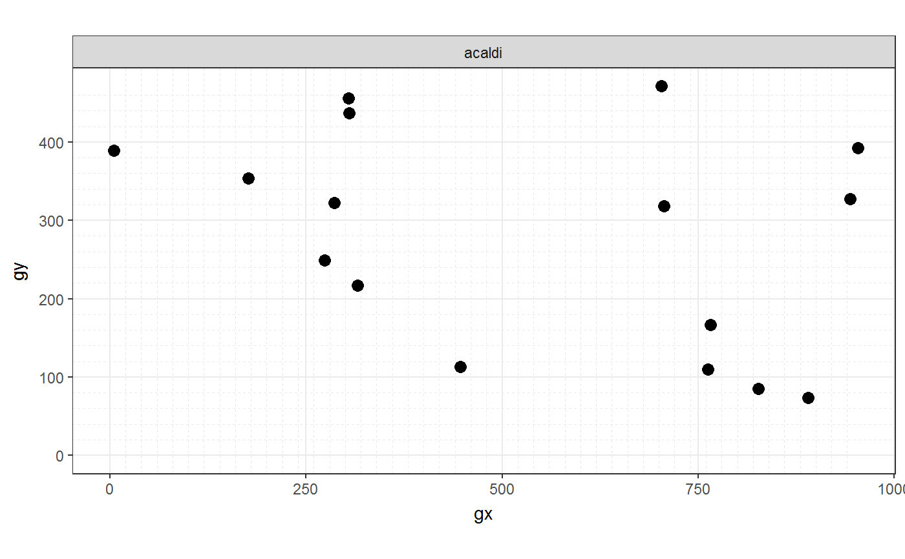
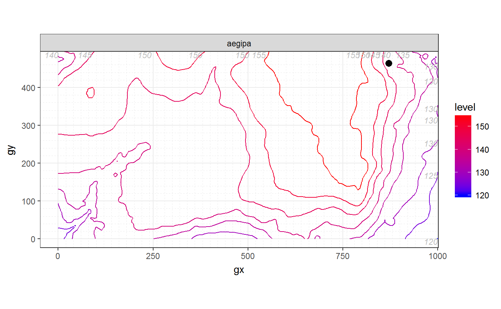
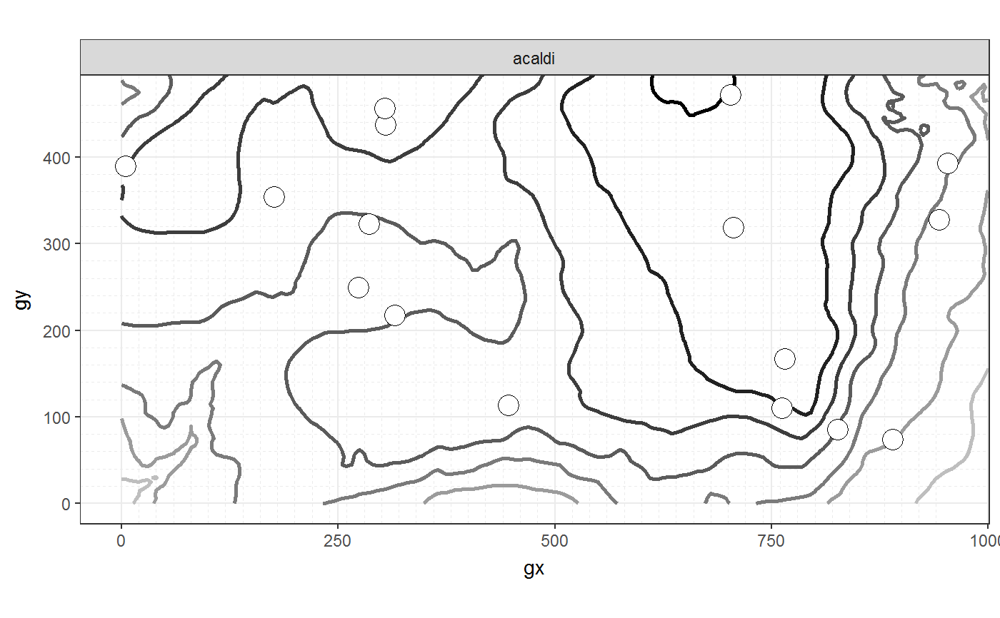
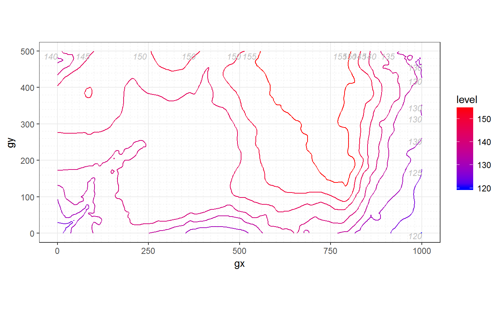
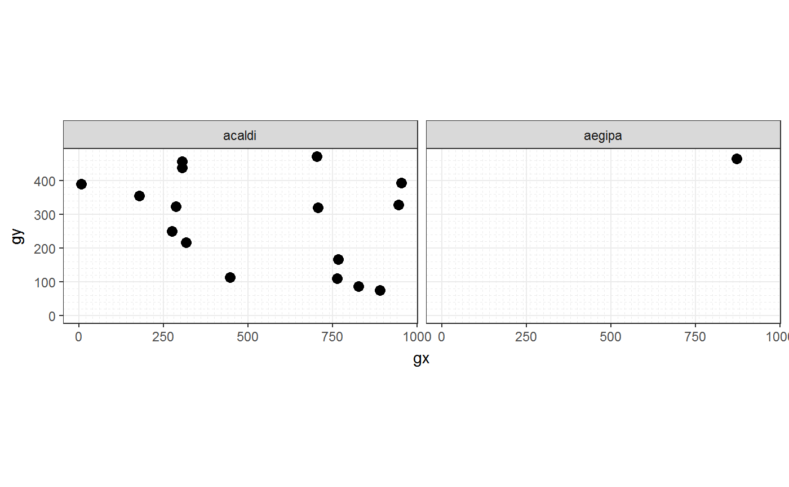
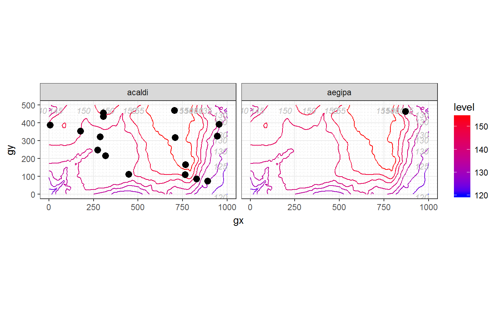
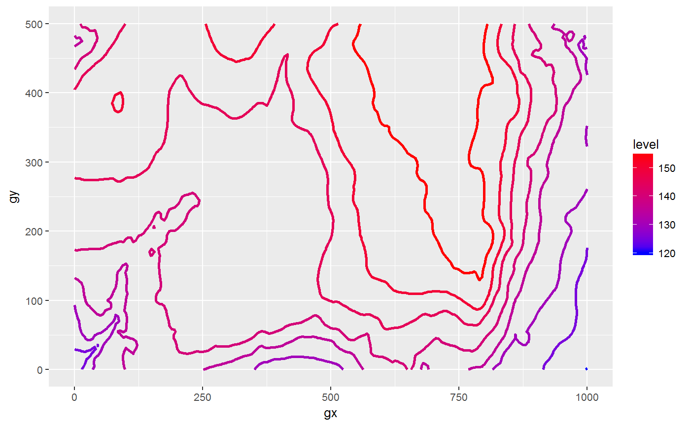
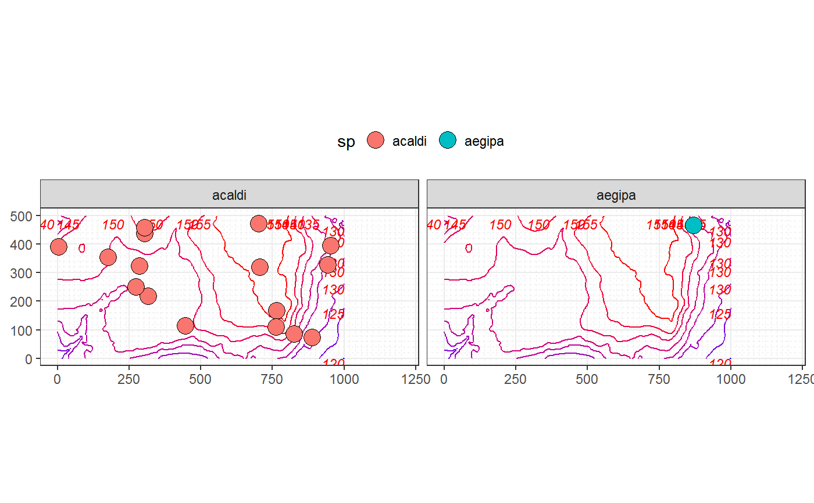

These functions wrap a number of map elements for convenience:
Use map_sp_elev() to map species and optionally elevation data in a
single page. You can map multiple species on the same plot or you can facet
the output to map each species on a single plot and all plots in a single
page.
Use map_elev() if you want to map only elevation in the simplest way.
Use maply_sp_elev() to apply the function map_sp_elev() to each species
in a census dataset. The output is not a map but a list of maps, one per
species, that can be printed on a .pdf file.
maply_sp_elev(census, elevation = NULL, species = "all", fill = "black", shape = 21, point_size = 3, contour_size = 0.5, low = "blue", high = "red", hide_legend_color = FALSE, bins = NULL, label_elev = TRUE, label_size = 3, label_color = "grey", xyjust = 1, fontface = "italic", xlim = NULL, ylim = NULL, custom_theme = NULL) map_sp_elev(census, elevation = NULL, fill = "black", shape = 21, wrap = TRUE, point_size = 3, contour_size = 0.5, low = "blue", high = "red", hide_legend_color = FALSE, bins = NULL, label_elev = TRUE, label_size = 3, label_color = "grey", xyjust = 1, fontface = "italic", xlim = NULL, ylim = NULL, custom_theme = NULL) map_elev(elevation, contour_size = 0.5, low = "blue", high = "red", hide_legend_color = FALSE, bins = NULL, label_elev = TRUE, label_size = 3, label_color = "grey", xyjust = 1, fontface = "italic", xlim = NULL, ylim = NULL, custom_theme = NULL)
| census | A dataframe; specifically, a ForestGEO's census. |
|---|---|
| elevation | A list or dataframe giving ForestGEO's elevation-data. |
| species | A character vector. Each element of the vector must be the
code for one species in the column |
| fill | Character; either a colour or "sp", which maps each species to a different color. |
| shape | A number giving point size and shape (as in
|
| point_size | A number giving point size and shape (as in
|
| contour_size | A number giving the size of the contour of elevation
lines. Passed to |
| low | A string giving a color of the elevation lines representing low and high elevation. |
| high | A string giving a color of the elevation lines representing low and high elevation. |
| hide_legend_color | Logical; |
| bins | A number giving the number of elevation lines to map. |
| label_elev | Logical. |
| label_size | A number ( |
| label_color | A number ( |
| xyjust | A number to adjust the position of the text labels of the elevation lines. |
| fontface | A number ( |
| xlim | A vector of length 2, for example |
| ylim | A vector of length 2, for example |
| custom_theme | A valid |
| wrap | (Not available for |
maply_sp_elev() returns a list of ggplots.
map_elev() and map_sp_elev() return a ggplot.
These functions wrap functions from the ggplot2 package. For more control you can use ggplot2 directly or smaller wrappers in fgeo.map (see the sections See Also and Examples). ggplot2 will give you maximum control and is your best choice if you are already familiar with it. The wrapper functions in fgeo.map focus on ForestGEO's data: For example, their names commonly mention the variable of a ForestGEO dataset they work with.
The most important difference between ggplot2 and fgeo.map
is in the way you compose multiple functions to create complex plots. With
ggplot2 you compose multiple functions with +. For example,
to apply functions f() then g() you do something like this:
f(data) + g(). With fgeo.map you compose multiple functions
in the usual way with g(f(data)), or in the modern way with the pipe:
f(data) %>% g() -- it is up to you. To learn more
about the pipe see http://r4ds.had.co.nz/pipes.html.
map_gx_gy_elev(), limit_gx_gy(), add_sp(), contour_elev(),
label_elev(), hide(), wrap()
Other `maply_*` functions.: maply_tag
# Small dataset with a few species for quick examples some_sp <- c("PREMON", "CASARB") census <- subset(fgeo.data::luquillo_tree5_random, sp %in% some_sp) elevation <- fgeo.data::luquillo_elevation # Map on multiple pages --------------------------------------------------- p1 <- maply_sp_elev(census) # Showing first map only. p1[[1]]p2 <- maply_sp_elev(census, elevation) # Showing second map only. p2[[2]]# Tweaking p3 <- maply_sp_elev( census, elevation, species = "all", fill = "white", shape = 21, point_size = 5, contour_size = 1, low = "grey", high = "black", hide_legend_color = TRUE, bins = 7, label_elev = FALSE ) p3[[1]]# Map on a single page (maybe multiple panels) ---------------------------- # Simplest way to map elevation data only map_elev(elevation)map_sp_elev(census)map_sp_elev(census, elevation)# For maximum control, you can compose maps as you like # Traditional sintax: g(f(x)) contour_elev(map_gx_gy_elev(elevation))# The traditional sintax is hard to read when you compose multiple functions. # With the pipe, readability isn't affected by the number of functions. map_gx_gy_elev(elevation) %>% limit_gx_gy(xlim = c(-100, 400)) %>% contour_elev(contour_size = 0.5) %>% label_elev(label_color = "red") %>% hide_axis_labels() %>% hide_legend_color() %>% add_sp(census, point_size = 5) %>% wrap("sp") %>% theme_default(legend.position = "top")